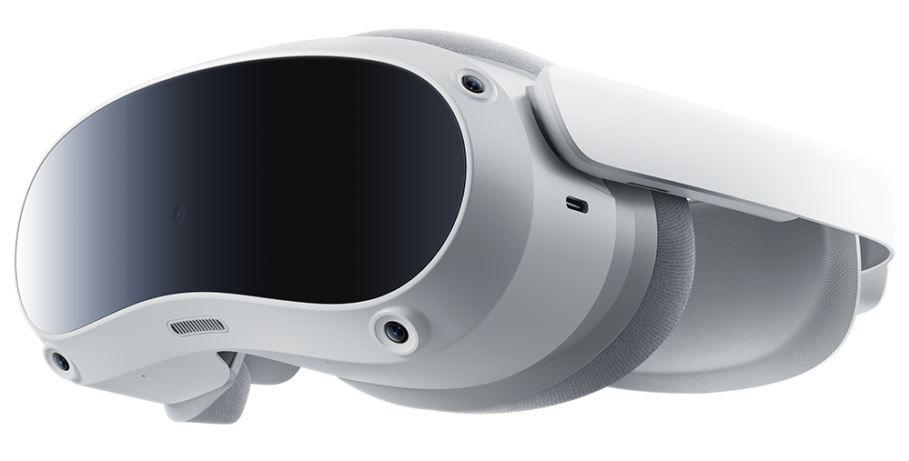

Pico MultiView
Nessun visore collegato
0 selezionati
–

Nessun visore collegato
Avvia o chiudi un'app già installata sui visori. I comandi valgono per la selezione, o per tutti se non c'è selezione.
Cerca un filmato nei file dei visori. Cliccandolo parte su tutti quelli che ce l'hanno, nello stesso momento.
Il Mac resta collegato ai visori e serve la stessa interfaccia sulla wifi. Sull'iPad apri Safari, vai a uno di questi indirizzi e inserisci il PIN.
------
Chi conosce indirizzo e PIN comanda i visori: usalo su una rete di cui ti fidi e cambia il PIN se un iPad gira per la sala in mano ad altri.
I visori devono essere sulla stessa wifi del Mac e avere il debug ADB già autorizzato
(vedi docs/SETUP-PICO.md).
Le app che vuoi poter lanciare sui visori con un clic.